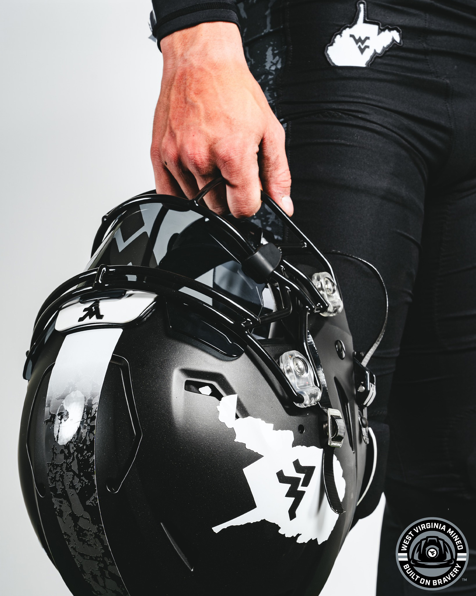

Last week the West Virginia Football team continued revealing new uniforms with black "coal themed" uniforms. The response on the internet has been robust to say the least, complete with a wide array of opinions. It's not the first version of a "coal themed" uniform, but it is the first one that is primarily black. Now that a few days have passed, let's break it down.
The Helmets
Matte Black Shells are adorned with white decals of the state of West Virginia with the Flying WV on the sides and a custom helmet stripe. The logo has also been featured on the last two versions of WVU's "Country Roads" Uniforms. The stripe is a tapered coal pattern that fades from white in the front to black towards the back. The rear bumper of the helmet includes a decal reading "Montani Semper Liberi" which is the state motto meaning "Mountaineers Are Always Free".
The Jerseys
Nike's FUSE chassis returns as the base for the jersey and pants. The tailoring is slightly different due to the lack of shoulder stripes that are featured in the new primary jerseys (blue, gold, and white). The jersey features a gray and white number and a vertical stripe on the sleeve. The stripe is white and gray and is styled to mimic a coal miner’s uniform. The sleeves and cuffs also feature a coal pattern. The “WEST VIRGINIA” wordmark is across the chest.

The Pants
The pants are solid black with the state outline logo and Nike swoosh on either front hip. In addition, the pants have a small stripe on the side towards the bottom. The stripe is the same style as found on the jerseys, but at an angle.
Add an important quotation or highlighted observation here when appropriate.
Final Thoughts
The rumors of these uniforms have be circulating for months on social media and we finally have a look. Much more effort has seemed to be put in these black uniforms than the black uniforms the basketball team unveiled this past basketball season. Some will (and have) complained about the lack of blue and gold, but I think that’s one of the reasons that make the uniform unique. That and the fact all the elements are designed so that it’s a complete uniform and not a mix and match with different elements like we’ve seen in the past. What are your thoughts? Too many design elements? Not enough gold and blue? Personally, if it’s reserved for no more than one game, which has to be a night game, then it’s alright. I don’t think we need to mix and match elements of this set with the primary uniform elements.